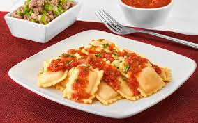

Receta de Ravioles

Descripción:
Ravioles caseros rellenos de carne, una delicia para compartir en familia.
Una receta fácil y rápida para disfrutar de un plato tradicional italiano.
Ingredientes:
- Ravioles
- Carne molida
- Queso rallado
- Salsa de tomate
- Ajo
Pasos:
- Preparar la salsa de tomate y el relleno de carne.
- Calentar el horno a 180°C.
- En un molde, alternar capas de ravioles, salsa y relleno.
- Finalmente, espolvorear queso rallado encima.
- Cocinar durante 30-40 minutos o hasta que esté dorado.
Volver a la página principal